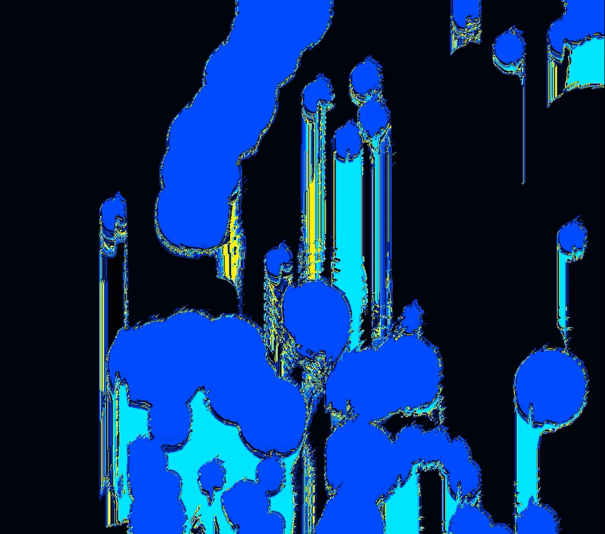

Creative Technology · Visual Experience · 2026
What the Sound Leaves Behind
A recorded live performance becomes an evolving spray-painted composition, translating freedom of self-expression from sound into movement, color, and bleed.
What does freedom sound like when it leaves a mark?
“Umi Says” reflects the freedom of self-expression I was trying to rediscover in my own practice. Returning to my roots in painting and graphic design, I chose spray paint for its connection to graffiti, immediacy, and making yourself visible. I built a digital marker whose movement, color, and bleed are authored by the performance.
002
Film
With soundPerformance beginsPaint respondsComposition developsFinal image remains
003
Final composition
Artwork